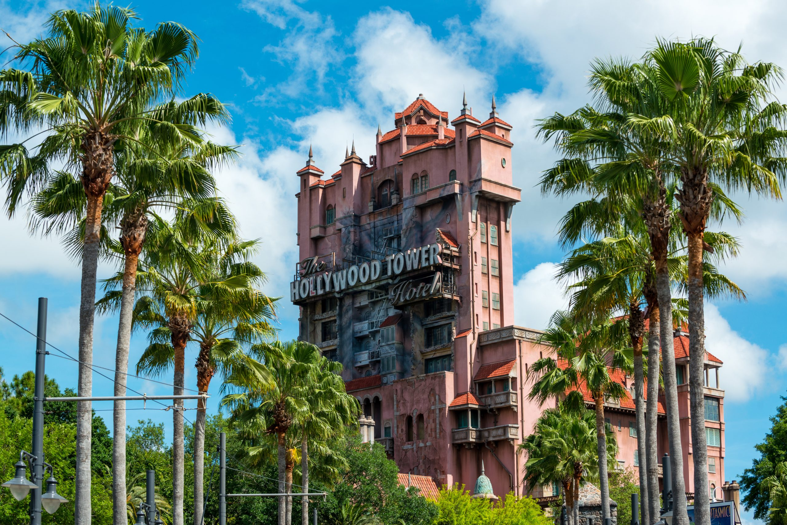

Hollywood Studios
Publicado el 25 de Mayo, 2025
Hollywood Studios es el parque dedicado al cine y el entretenimiento, ideal para los amantes del séptimo arte y las franquicias famosas. Aquí podrás sumergirte en mundos como Star Wars Galaxy’s Edge, con atracciones como Rise of the Resistance, que es una de las experiencias más inmersivas de Disney.
También cuenta con áreas dedicadas a Toy Story, con juegos interactivos para toda la familia, y atracciones clásicas como Tower of Terror y Rock ‘n’ Roller Coaster con Aerosmith, para los que buscan adrenalina.
← Volver al inicioAdemás de las atracciones, Hollywood Studios ofrece shows en vivo y eventos temáticos que capturan la esencia de Hollywood y el entretenimiento. Es una excelente opción para los visitantes que quieren vivir la magia del cine y disfrutar de emociones variadas.